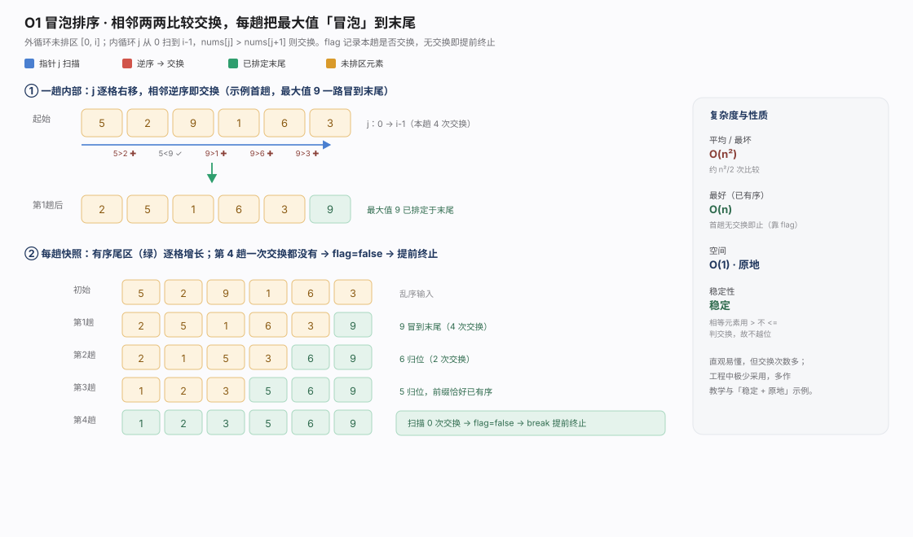
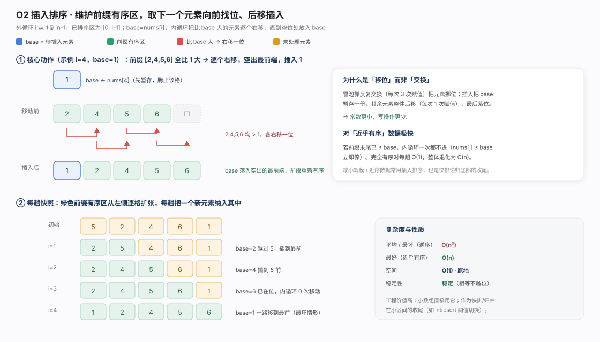
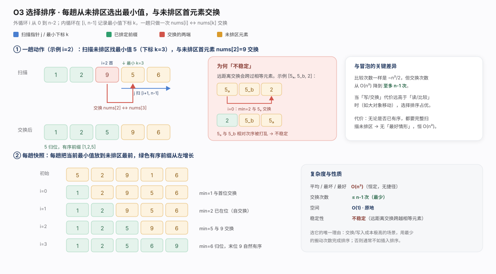
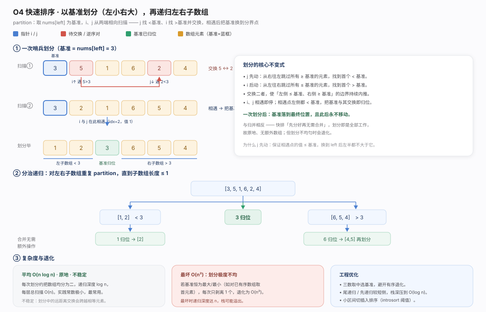
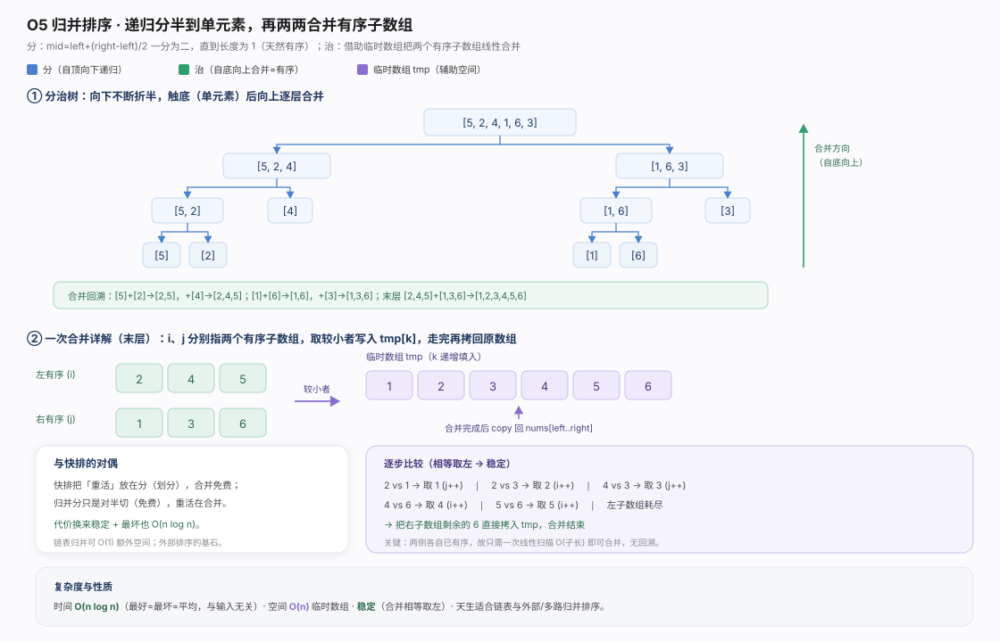
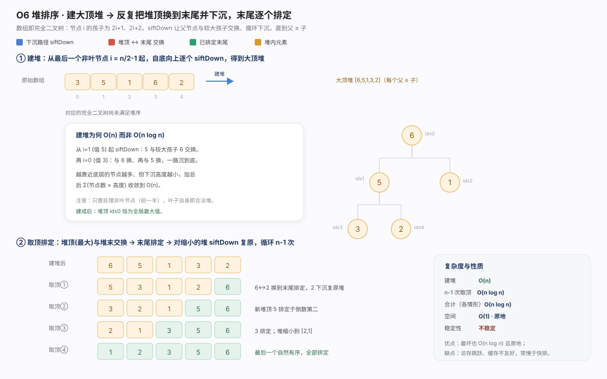
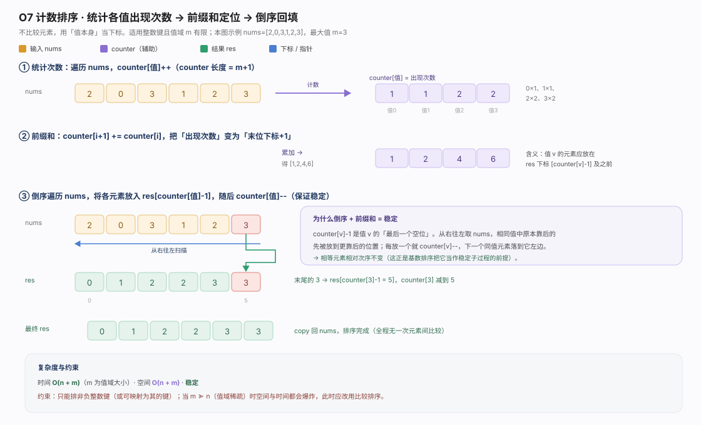
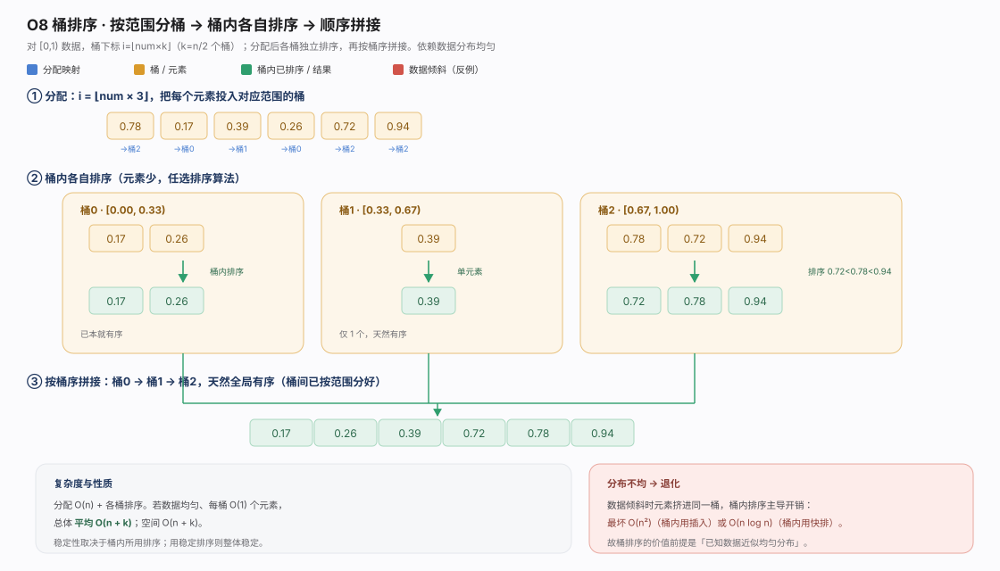
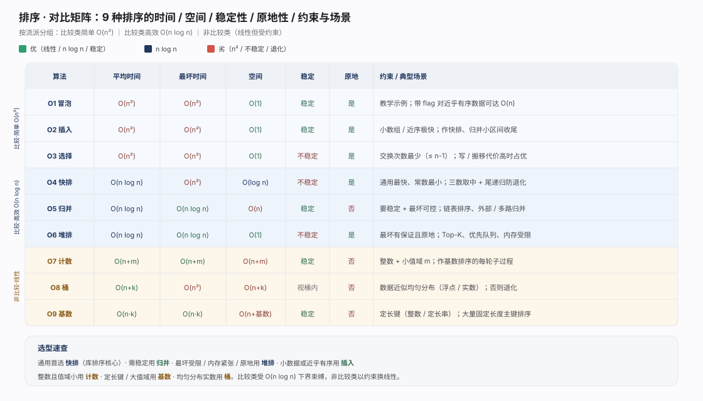

排序按某键的全序重排元素，是数据处理的地基：有序数据把查找降到 O(log n)、让去重/求交并/分组退化为线性扫描，也是索引、归并连接、外部排序的前提。优劣看四正交维度——时间（平均/最坏）、空间(是否原地)、稳定性(相等元素相对次序)、输入前提。9 种经典排序分两流派：基于两两比较的比较类，与用键值当下标的非比较类。
比较类有信息论下界 Ω(n log n)：n! 种排列、每次比较至多减半候选，决策树需 log₂(n!)≈n log n 层——任何纯比较排序最坏不优于 O(n log n)（快排/归并/堆排达此下界）。非比较类（计数/桶/基数）用「值域有限/分布均匀/定长键」等前提换线性时间，不属下界约束模型。

冒泡排序：相邻两两比较逆序即交换，一轮后最大元素浮到末尾排定、范围缩 1。关键优化 swapped 标志：某轮无交换即已有序、立即终止，使近序输入达最好 O(n)。稳定、原地 O(1)，但平均/最坏 O(n²) 且交换多，几乎只用于教学。
package chapter_sorting
/* 冒泡排序 */
func bubbleSort(nums []int) {
// 外循环：未排序区间为 [0, i]
for i := len(nums) - 1; i > 0; i-- {
// 内循环：将未排序区间 [0, i] 中的最大元素交换至该区间的最右端
for j := 0; j < i; j++ {
if nums[j] > nums[j+1] {
// 交换 nums[j] 与 nums[j + 1]
nums[j], nums[j+1] = nums[j+1], nums[j]
}
}
}
}
/* 冒泡排序（标志优化）*/
func bubbleSortWithFlag(nums []int) {
// 外循环：未排序区间为 [0, i]
for i := len(nums) - 1; i > 0; i-- {
flag := false // 初始化标志位
// 内循环：将未排序区间 [0, i] 中的最大元素交换至该区间的最右端
for j := 0; j < i; j++ {
if nums[j] > nums[j+1] {
// 交换 nums[j] 与 nums[j + 1]
nums[j], nums[j+1] = nums[j+1], nums[j]
flag = true // 记录交换元素
}
}
if flag == false { // 此轮“冒泡”未交换任何元素，直接跳出
break
}
}
}
插入排序：维护已排序前缀，每次取后缀首元素 base，在前缀从右向左把更大者后移直至找到插入位。稳定、原地、实现简单，对近序数据极快（最好 O(n)），常作快排/归并递归到小区间(如长度<16)的收尾算法。平均/最坏 O(n²)。
package chapter_sorting
/* 插入排序 */
func insertionSort(nums []int) {
// 外循环：已排序区间为 [0, i-1]
for i := 1; i < len(nums); i++ {
base := nums[i]
j := i - 1
// 内循环：将 base 插入到已排序区间 [0, i-1] 中的正确位置
for j >= 0 && nums[j] > base {
nums[j+1] = nums[j] // 将 nums[j] 向右移动一位
j--
}
nums[j+1] = base // 将 base 赋值到正确位置
}
}
选择排序：每轮在未排序区扫描找最小值，与未排序区首位交换即排定。交换次数最少(至多 n-1 次)，适合「元素大、移动代价远高于比较」场景。但比较恒为 O(n²) 与是否有序无关，且不稳定（相等元素可能被换到彼此之后）。原地 O(1)。
package chapter_sorting
/* 选择排序 */
func selectionSort(nums []int) {
n := len(nums)
// 外循环：未排序区间为 [i, n-1]
for i := 0; i < n-1; i++ {
// 内循环：找到未排序区间内的最小元素
k := i
for j := i + 1; j < n; j++ {
if nums[j] < nums[k] {
// 记录最小元素的索引
k = j
}
}
// 将该最小元素与未排序区间的首个元素交换
nums[i], nums[k] = nums[k], nums[i]
}
}
快速排序：分治。选 pivot，一次 partition 重排为「小于|pivot|大于」三段、pivot 落定，再递归两段。平均划分均衡、深度 O(log n)、时间 O(n log n) 且常数最小，是多数标准库首选。但 pivot 每次取极值（如对已排序数据取首元素）划分退化，最坏 O(n²)、栈深 O(n)；工程用三数取中/随机 pivot防退化、尾递归+小区间转插入优化。原地、不稳定。
package chapter_sorting
// 快速排序
type quickSort struct{}
// 快速排序（中位基准数优化）
type quickSortMedian struct{}
// 快速排序（递归深度优化）
type quickSortTailCall struct{}
/* 哨兵划分 */
func (q *quickSort) partition(nums []int, left, right int) int {
// 以 nums[left] 为基准数
i, j := left, right
for i < j {
for i < j && nums[j] >= nums[left] {
j-- // 从右向左找首个小于基准数的元素
}
for i < j && nums[i] <= nums[left] {
i++ // 从左向右找首个大于基准数的元素
}
// 元素交换
nums[i], nums[j] = nums[j], nums[i]
}
// 将基准数交换至两子数组的分界线
nums[i], nums[left] = nums[left], nums[i]
return i // 返回基准数的索引
}
/* 快速排序 */
func (q *quickSort) quickSort(nums []int, left, right int) {
// 子数组长度为 1 时终止递归
if left >= right {
return
}
// 哨兵划分
pivot := q.partition(nums, left, right)
// 递归左子数组、右子数组
q.quickSort(nums, left, pivot-1)
q.quickSort(nums, pivot+1, right)
}
/* 选取三个候选元素的中位数 */
func (q *quickSortMedian) medianThree(nums []int, left, mid, right int) int {
l, m, r := nums[left], nums[mid], nums[right]
if (l <= m && m <= r) || (r <= m && m <= l) {
return mid // m 在 l 和 r 之间
}
if (m <= l && l <= r) || (r <= l && l <= m) {
return left // l 在 m 和 r 之间
}
return right
}
/* 哨兵划分（三数取中值）*/
func (q *quickSortMedian) partition(nums []int, left, right int) int {
// 以 nums[left] 为基准数
med := q.medianThree(nums, left, (left+right)/2, right)
// 将中位数交换至数组最左端
nums[left], nums[med] = nums[med], nums[left]
// 以 nums[left] 为基准数
i, j := left, right
for i < j {
for i < j && nums[j] >= nums[left] {
j-- //从右向左找首个小于基准数的元素
}
for i < j && nums[i] <= nums[left] {
i++ //从左向右找首个大于基准数的元素
}
//元素交换
nums[i], nums[j] = nums[j], nums[i]
}
//将基准数交换至两子数组的分界线
nums[i], nums[left] = nums[left], nums[i]
return i //返回基准数的索引
}
/* 快速排序 */
func (q *quickSortMedian) quickSort(nums []int, left, right int) {
// 子数组长度为 1 时终止递归
if left >= right {
return
}
// 哨兵划分
pivot := q.partition(nums, left, right)
// 递归左子数组、右子数组
q.quickSort(nums, left, pivot-1)
q.quickSort(nums, pivot+1, right)
}
/* 哨兵划分 */
func (q *quickSortTailCall) partition(nums []int, left, right int) int {
// 以 nums[left] 为基准数
i, j := left, right
for i < j {
for i < j && nums[j] >= nums[left] {
j-- // 从右向左找首个小于基准数的元素
}
for i < j && nums[i] <= nums[left] {
i++ // 从左向右找首个大于基准数的元素
}
// 元素交换
nums[i], nums[j] = nums[j], nums[i]
}
// 将基准数交换至两子数组的分界线
nums[i], nums[left] = nums[left], nums[i]
return i // 返回基准数的索引
}
/* 快速排序（递归深度优化）*/
func (q *quickSortTailCall) quickSort(nums []int, left, right int) {
// 子数组长度为 1 时终止
for left < right {
// 哨兵划分操作
pivot := q.partition(nums, left, right)
// 对两个子数组中较短的那个执行快速排序
if pivot-left < right-pivot {
q.quickSort(nums, left, pivot-1) // 递归排序左子数组
left = pivot + 1 // 剩余未排序区间为 [pivot + 1, right]
} else {
q.quickSort(nums, pivot+1, right) // 递归排序右子数组
right = pivot - 1 // 剩余未排序区间为 [left, pivot - 1]
}
}
}
归并排序：分治。二分到长度 1，再两两归并——双指针取较小者写辅助数组、一段耗尽拷入另一段剩余。merge「相等取左段」保证稳定。所有情形都 O(n log n)（最坏可控），代价是 O(n) 辅助空间、非原地。是链表排序、外部排序/多路归并、要求稳定+最坏有保证场景的首选。
package chapter_sorting
/* 合并左子数组和右子数组 */
func merge(nums []int, left, mid, right int) {
// 左子数组区间为 [left, mid], 右子数组区间为 [mid+1, right]
// 创建一个临时数组 tmp ，用于存放合并后的结果
tmp := make([]int, right-left+1)
// 初始化左子数组和右子数组的起始索引
i, j, k := left, mid+1, 0
// 当左右子数组都还有元素时，进行比较并将较小的元素复制到临时数组中
for i <= mid && j <= right {
if nums[i] <= nums[j] {
tmp[k] = nums[i]
i++
} else {
tmp[k] = nums[j]
j++
}
k++
}
// 将左子数组和右子数组的剩余元素复制到临时数组中
for i <= mid {
tmp[k] = nums[i]
i++
k++
}
for j <= right {
tmp[k] = nums[j]
j++
k++
}
// 将临时数组 tmp 中的元素复制回原数组 nums 的对应区间
for k := 0; k < len(tmp); k++ {
nums[left+k] = tmp[k]
}
}
/* 归并排序 */
func mergeSort(nums []int, left, right int) {
// 终止条件
if left >= right {
return
}
// 划分阶段
mid := left + (right - left) / 2
mergeSort(nums, left, mid)
mergeSort(nums, mid+1, right)
// 合并阶段
merge(nums, left, mid, right)
}
堆排序：数组视作完全二叉树。先建大顶堆——从最后非叶节点 n/2-1 起自底向上 siftDown，因「底层节点多但下沉浅」建堆收敛 O(n)。再反复：堆顶(最大)与堆末交换、排定、规模减一、新堆顶 siftDown 复原，共 n-1 次各 O(log n)。整体 O(n log n)、原地 O(1)、最坏有保证；缺点访存跳跃、缓存不友好常慢于快排。不稳定，常用于 Top-K、优先队列。
package chapter_sorting
/* 堆的长度为 n ，从节点 i 开始，从顶至底堆化 */
func siftDown(nums *[]int, n, i int) {
for true {
// 判断节点 i, l, r 中值最大的节点，记为 ma
l := 2*i + 1
r := 2*i + 2
ma := i
if l < n && (*nums)[l] > (*nums)[ma] {
ma = l
}
if r < n && (*nums)[r] > (*nums)[ma] {
ma = r
}
// 若节点 i 最大或索引 l, r 越界，则无须继续堆化，跳出
if ma == i {
break
}
// 交换两节点
(*nums)[i], (*nums)[ma] = (*nums)[ma], (*nums)[i]
// 循环向下堆化
i = ma
}
}
/* 堆排序 */
func heapSort(nums *[]int) {
// 建堆操作：堆化除叶节点以外的其他所有节点
for i := len(*nums)/2 - 1; i >= 0; i-- {
siftDown(nums, len(*nums), i)
}
// 从堆中提取最大元素，循环 n-1 轮
for i := len(*nums) - 1; i > 0; i-- {
// 交换根节点与最右叶节点（交换首元素与尾元素）
(*nums)[0], (*nums)[i] = (*nums)[i], (*nums)[0]
// 以根节点为起点，从顶至底进行堆化
siftDown(nums, i, 0)
}
}
计数排序：非比较，用「值当下标」。统计各值出现次数存 counter → 求前缀和使 counter[v] 为「≤v 元素个数」→ 倒序遍历放至 res[counter[值]-1] 并减一。倒序+前缀和保证稳定。时间空间均 O(n+m)（m 为值域）。约束：只能处理非负整数键，值域 m 远大于 n 时空间时间爆炸。是基数排序每轮的子过程。
package chapter_sorting
type CountingSort struct{}
/* 计数排序 */
// 简单实现，无法用于排序对象
func countingSortNaive(nums []int) {
// 1. 统计数组最大元素 m
m := 0
for _, num := range nums {
if num > m {
m = num
}
}
// 2. 统计各数字的出现次数
// counter[num] 代表 num 的出现次数
counter := make([]int, m+1)
for _, num := range nums {
counter[num]++
}
// 3. 遍历 counter ，将各元素填入原数组 nums
for i, num := 0, 0; num < m+1; num++ {
for j := 0; j < counter[num]; j++ {
nums[i] = num
i++
}
}
}
/* 计数排序 */
// 完整实现，可排序对象，并且是稳定排序
func countingSort(nums []int) {
// 1. 统计数组最大元素 m
m := 0
for _, num := range nums {
if num > m {
m = num
}
}
// 2. 统计各数字的出现次数
// counter[num] 代表 num 的出现次数
counter := make([]int, m+1)
for _, num := range nums {
counter[num]++
}
// 3. 求 counter 的前缀和，将“出现次数”转换为“尾索引”
// 即 counter[num]-1 是 num 在 res 中最后一次出现的索引
for i := 0; i < m; i++ {
counter[i+1] += counter[i]
}
// 4. 倒序遍历 nums ，将各元素填入结果数组 res
// 初始化数组 res 用于记录结果
n := len(nums)
res := make([]int, n)
for i := n - 1; i >= 0; i-- {
num := nums[i]
// 将 num 放置到对应索引处
res[counter[num]-1] = num
// 令前缀和自减 1 ，得到下次放置 num 的索引
counter[num]--
}
// 使用结果数组 res 覆盖原数组 nums
copy(nums, res)
}
桶排序：非比较(桶间)+比较(桶内)。按映射(如 i=⌊num×k⌋)把元素投入按范围有序的桶，各桶内部排序，再按桶序拼接。数据近似均匀、每桶 O(1) 个时平均 O(n+k)、空间 O(n+k)，稳定性取决于桶内排序。致命前提是分布均匀——倾斜时元素挤入同桶退化为桶内复杂度(最坏 O(n²)或 O(n log n))。适合已知均匀分布的实数。
package chapter_sorting
import "sort"
/* 桶排序 */
func bucketSort(nums []float64) {
// 初始化 k = n/2 个桶，预期向每个桶分配 2 个元素
k := len(nums) / 2
buckets := make([][]float64, k)
for i := 0; i < k; i++ {
buckets[i] = make([]float64, 0)
}
// 1. 将数组元素分配到各个桶中
for _, num := range nums {
// 输入数据范围为 [0, 1)，使用 num * k 映射到索引范围 [0, k-1]
i := int(num * float64(k))
// 将 num 添加进桶 i
buckets[i] = append(buckets[i], num)
}
// 2. 对各个桶执行排序
for i := 0; i < k; i++ {
// 使用内置切片排序函数，也可以替换成其他排序算法
sort.Float64s(buckets[i])
}
// 3. 遍历桶合并结果
i := 0
for _, bucket := range buckets {
for _, num := range bucket {
nums[i] = num
i++
}
}
}基数排序(LSD 低位优先)：非比较，对定长键从最低位到最高位、每轮以该位数字为键做一次稳定的计数排序(基数 10 每位 10 桶)。每轮必须稳定，高位相同时保留低位相对次序、逐位累积成完整大小关系。时间 O(n·k)(k 为位数)、空间 O(n+基数)、稳定。用「k 个小值域」化解计数排序的大值域难题，适合大量定长整数/字符串主键。
package chapter_sorting
import "math"
/* 获取元素 num 的第 k 位，其中 exp = 10^(k-1) */
func digit(num, exp int) int {
// 传入 exp 而非 k 可以避免在此重复执行昂贵的次方计算
return (num / exp) % 10
}
/* 计数排序（根据 nums 第 k 位排序） */
func countingSortDigit(nums []int, exp int) {
// 十进制的位范围为 0~9 ，因此需要长度为 10 的桶数组
counter := make([]int, 10)
n := len(nums)
// 统计 0~9 各数字的出现次数
for i := 0; i < n; i++ {
d := digit(nums[i], exp) // 获取 nums[i] 第 k 位，记为 d
counter[d]++ // 统计数字 d 的出现次数
}
// 求前缀和，将“出现个数”转换为“数组索引”
for i := 1; i < 10; i++ {
counter[i] += counter[i-1]
}
// 倒序遍历，根据桶内统计结果，将各元素填入 res
res := make([]int, n)
for i := n - 1; i >= 0; i-- {
d := digit(nums[i], exp)
j := counter[d] - 1 // 获取 d 在数组中的索引 j
res[j] = nums[i] // 将当前元素填入索引 j
counter[d]-- // 将 d 的数量减 1
}
// 使用结果覆盖原数组 nums
for i := 0; i < n; i++ {
nums[i] = res[i]
}
}
/* 基数排序 */
func radixSort(nums []int) {
// 获取数组的最大元素，用于判断最大位数
max := math.MinInt
for _, num := range nums {
if num > max {
max = num
}
}
// 按照从低位到高位的顺序遍历
for exp := 1; max >= exp; exp *= 10 {
// 对数组元素的第 k 位执行计数排序
// k = 1 -> exp = 1
// k = 2 -> exp = 10
// 即 exp = 10^(k-1)
countingSortDigit(nums, exp)
}
}
四维度横向对比（平均/最坏时间、空间、稳定、原地、约束）见对比矩阵图。选型速查：通用首选快排；需稳定用归并；最坏受限/内存紧张/要原地用堆排；小数据或近序用插入；整数且值域小用计数；定长键/大值域用基数；已知均匀分布实数用桶。没有「最好的排序」，只有匹配数据特征与约束的排序。
- Cormen, Leiserson, Rivest, Stein.《算法导论》(Introduction to Algorithms, 3rd/4th ed.)，第 2、6、7、8 章：插入 / 归并 / 堆 / 快速 / 计数 / 基数 / 桶排序及比较排序下界证明。 - Sedgewick, Wayne.《Algorithms, 4th Edition》，第 2 章 Sorting。Princeton 官方配套：https://algs4.cs.princeton.edu/20sorting/ - Knuth.《The Art of Computer Programming, Vol. 3: Sorting and Searching》。 - Hello 算法（开源，krahets）排序章节：https://www.hello-algo.com/chapter_sorting/ - Wikipedia：Sorting algorithm https://en.wikipedia.org/wiki/Sorting_algorithm ；Comparison sort（下界）https://en.wikipedia.org/wiki/Comparison_sort